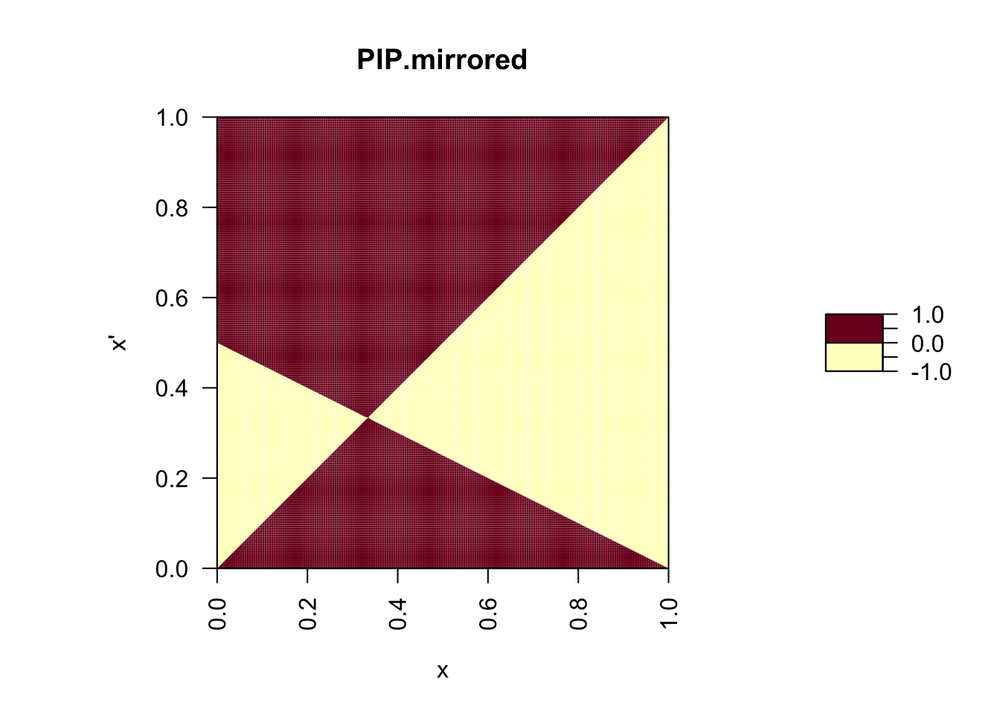

On this page, we explore a model for the evolution of altruism. Specifically, we investigate the possibility that individuals sacrifice their own life in order to increase the survival of other individuals. As we will see, such behavior can evolve if a self-sacrifice benefits related individuals.
In this example, payoff is equal to survival. Individuals are characterized by a strategy x, which is the probability that they sacrifice their life in order to increase the survival of another individual with which they interact. For examples, a focal individual can give its resources to another individual. As a result, the focal individual dies while the survival of the interacting individual increases by B.
The survival of an individual that sacrifices itself is assumed to be zero. If an individual does not sacrifice its life it survives with probability \(S\). This survival probability can be increased by an amount \(B\) if the interacting individual sacrifices its life. With this, the expected survival of an individual with strategy \(x'\) that interacts with an individual with strategy \(x\) is
\[ \begin{align} W(x', x) & = (1 - x') (S + B x) \end{align} \]
Similarly, the expected survival of an individual with strategy \(x\) interacting with another individual with strategy \(x\) is given by
\[ \begin{align} W(x, x) & = (1 - x) (S + B x) \end{align} \]
The invasion fitness (or fitness advantage) of a rare mutant with strategy \(x'\) in a resident population with strategy \(x\) can then be written as
\[ \begin{align} s(x', x) & = W(x', x) - W(x, x)\\ & = (1 - x') (S + B x) - (1 - x) (S + B x)\\ & = (x - x') (S + B x). \end{align} \]
Since only mutants with \(s(x', x) > 0\) can invade, we can see from the above equation that a mutant \(x'\) can invade a resident population with strategy \(x\) only if \(x' < x\). From this, we can conclude that \(x\) will evolve to \(x=0\): no individual sacrifices its life to increase the survival of another individual. Also, \(x^*=0\) is an ESS, since any possible mutant will then have a negative invasion fitness. This result makes intuitive sense: We do not expect that natural selection favors to give away ones life for the benefit of another individual.
We can confirm this result by plotting a Pairwise Invadability Plot. Remember that a PIP is a contour plot of invasion fitness s(x’, x). PIP’s have a contour-line where s(x’, x) = 0. Since by definition s(x, x) = 0, PIP’s always have a contour line along the diagonal (the 45-degree line). But as we have seen in the plant-height model, mutants x’ different from x can also have zero-invasion fitness and these form a second contour line in the PIP. Positive areas in the PIP correspond to combinations of mutants with trait value x’ and residents with trait value x such that the mutant has positive invasion fitness and can therefore establish itself in the population.
S <- 0
B <- 0.5
w <- function(x.m, x.r) {
(1 - x.m) * (S + B * x.r)
}
s <- function(x.m, x.r) {
w(x.m, x.r) - w(x.r, x.r)
}
PIP <- outer(seq(0, 1, 0.005), seq(0, 1, 0.005), s)
# the computes s(x', x) for all combinations of x' and x
par(pty="s")
filled.contour(t(PIP), levels = c(-1, 0, 1), main = "PIP", las = 2,
xlab = expression("resident x"),
ylab = expression("mutant x'"))# yellow corresponds to combinations of mutants and residents
# such that the mutant has a negative invasion fitness (it cannot invade)
# red corresponds to combinations of mutants and residents
# such that the mutant has a positive invasion fitness (it can invade). As we can see, only mutants with \(x' < x\) can invade, confirming our above analytical result.
We can also arrive at this conclusion by looking at the partial derivative of \(W(x', x)\) with respect to \(x'\) when evaluated at \(x' = x\), which equals
\[ \frac{\partial W(x', x)}{\partial x'}\bigg|_{x' = x} = -(S + B x), \] which is always negative, indicating selection for lower values of the helping trait \(x\).
In the above derivation, we assumed that individuals interact randomly with each other. This means that a rare mutant with trait value \(x'\) will almost always interact with a resident individual with trait value \(x\). Let us now assume that the mutation occurs in a mother and that her offspring share the mutant allele with her with probability r. Such siblings share the allele due to identity by decent. If we assume a randomly mating population in which the strategy is coded by a single diploid locus, then two full siblings share the mutant allele \(x'\) with probability 1/2 (one of the siblings could have inherited the resident allele from the father instead of from the mother). Crucially, we now assume that interactions occur not with random individuals in the population but among siblings. Under this assumption, an individual carrying the mutant allele \(x'\) does not self sacrifice with probability \(1 - x'\) and then interacts with probability \(r\) with an individual carrying the same allele and with probability \(1-r\) with an individual carrying the resident allele \(x\). Taken together, the survival probability of a mutant individual with allele \(x'\) that interacts with relatives in a population where the resident allele is \(x\) is given by
\[ \begin{align} w(x', x_{\mathrm r}, x) & = (1 - x')(S + B x_{\mathrm r}). \end{align} \]
Here, the first argument \(x'\) denotes the strategy of the focal individual, the second argument \(x_{\mathrm r}\) denotes the strategy of the interacting individual, given by \(x'\) (with probability \(r\)) or \(x\) (the third argument, with probability \(1-r\)). The allelic fitness for \(x'\) and \(x\) can then be written as
\[ \begin{align} W(x', x) & = r w(x', x', x) + (1 - r) w(x', x, x) \\ & = (1 - x')(r (S + B x') + (1 - r) (S + B x) \\ & = (1 - x') ((S + B x) + r B (x' - x)),\\\\ W(x, x) & = r w(x, x, x) + (1 - r) w(x, x, x) \\ & = w(x, x, x)\\ & = (1 - x)(S + B x), \end{align} \]
respectively. With this, the fitness difference or invasion fitness equals
\[ \begin{align} s(x', x) & = W(x', x) - W(x, x)\\ & = (1 - x') ((S + B x) + r B (x' - x)) - (1 - x)(S + B x)\\ & = -(S + B x) (x' - x) + r (1 - x') B\\ & = (x' - x) (-(S + B x) + r (1 - x') B) \end{align} \]
Let us define \(c := (S + B x)\) and \(b := (1 - x') B\). Here, \(c\) is the survival probability of an individual interacting with an individual with allele \(x\). This is the potential survival that is lost if an individual sacrifices itself, and therefore appears as a direct cost. In contrast, \(b\) is the expected increase in survival when interacting with an individual with allele \(x'\) and is thus an indirect benefit.
\[ s(x', x) = (x' - x) (-c + r b), \]
indicating that a mutant \(x'\) that increases the probability of self-sacrifice (\(x' > x\)) can invade only if
\[ r b > c. \]
This last inequality is known as Hamilton’s Rule. It says that an altruistic act can evolve only if the benefit \(b\) of an altruistic act, weighted by the coefficient of relatedness \(r\) between the actor and receiver, is larger than the costs \(c\) to the actor.
We can also derive at this conclusion by looking at the partial derivative of \(W(x', x)\) with respect to \(x'\) when evaluated at \(x' = x\), as we did in the lecture. Then we obtain
\[ \begin{align} \frac{\partial W(x', x)}{\partial x'}\bigg|_{x' = x} & = r B -(S + Bx) + rBx - 2rBx \\ & = -\underbrace{(S + B x)}_{\text{costs} \,\, c} + r \underbrace{(1 - x)B}_{\text{benefits} \,\, b}, \end{align} \] indicating the selection favors mutants with increased propensity to self-sacrifice if and only if \(rb>c\), that is, if Hamilton’s rule is fulfilled.
What is the ESS for this model? To answer this question we again plot the PIP.
w <- function(x.m, x.r) {
(1 - x.m) * (r * (S + B * x.m) + (1 - r) * (S + B * x.r))
}
x <- function(x.m, x.r) {
w(x.m, x.r) - w(x.r, x.r)
}
r <- 0.5
PIP <- outer(seq(0, 1, 0.005), seq(0, 1, 0.005), s)
# the computes s(x', x) for all combinations of x' and x
par(pty="s")
filled.contour(t(PIP), levels = c(-1, 0, 1), main = "PIP", las = 2,
xlab = expression("resident x"),
ylab = expression("mutant x'"))From this graph, we can read that \(x^* = 0.33\) is an ESS. If the resident strategy is equal to this value, then \(s(x', x^*) < 0\) for all \(x' \neq x^*\).
In order to determine whether a mutant \(x'\) will replace the resident \(x\) or coexist with it, we plot the mirror image of a PIP (mirrored over the 45-degree line).
s.flipped.roles <- function(x.m, x.r) {
w(x.r, x.m) - w(x.m, x.m)
}
PIP.mirrored <- outer(seq(0, 1, 0.005), seq(0, 1, 0.005), s.flipped.roles)
par(pty="s")
filled.contour(t(PIP.mirrored), levels = c(-1, 0, 1), main = "PIP.mirrored", las = 2,
xlab = expression("x"),
ylab = expression("x'"))
In order to determine whether there are strategies (i.e., probabilities to self-sacrifice) that can coexist with each other we superimpose the PIP with its mirror image.
TEP <- ifelse(PIP > 0 & PIP.mirrored > 0, 1, ifelse(PIP < 0 & PIP.mirrored < 0, -1, 0))
par(pty="s")
filled.contour(t(TEP), levels = c(-1.5, -0.5, 0.5, 1.5), col = c("red", "blue", "green"),
plot.title={
title(main = "PIP and PIP.mirrored superimposed")
title(xlab=expression("x"))
title(ylab=expression("x'"))
abline(0, 1, lwd = 1)
})The green region in the last plot shows combinations of self-sacrifice strategies \(x'\) and \(x\) that each have a positive invasion fitness when rare. Thus, these different strategies are able to coexist with each other in a stable polymorphism.
Importantly, there is no evolutionary branching point. Thus, such a polymorphism cannot emerge by gradual evolution of the trait value \(x\). It can only emerge through a mutation with a relatively large mutational effect on \(x\).
However, one can show that for areas of coexistence that are not connected to an evolutionary branching point, further evolution of the two coexisting strategies results in the convergence of the two strategy values and ultimately in the loss of one of them. Evolution will then result in the ESS \(x^*\).